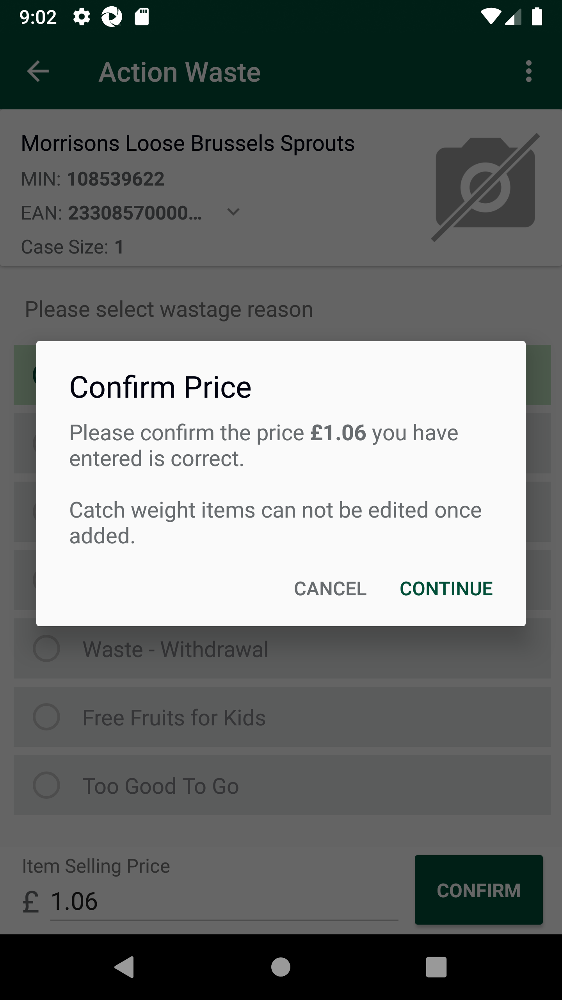
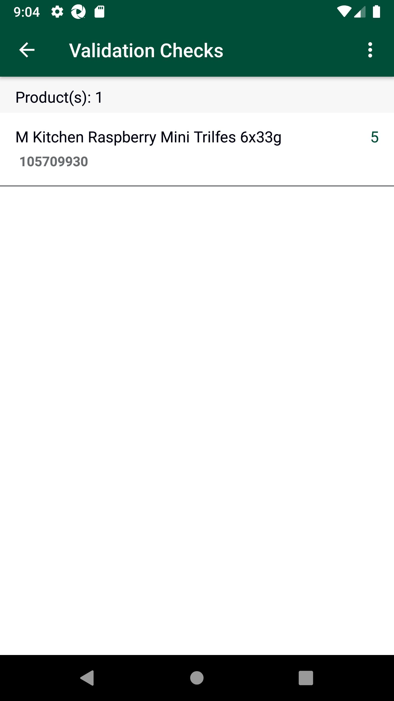
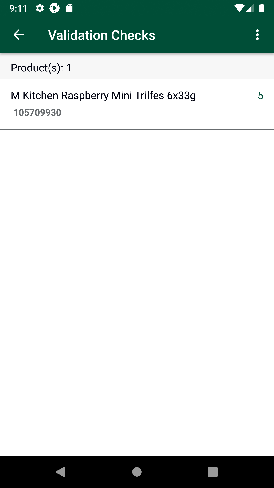
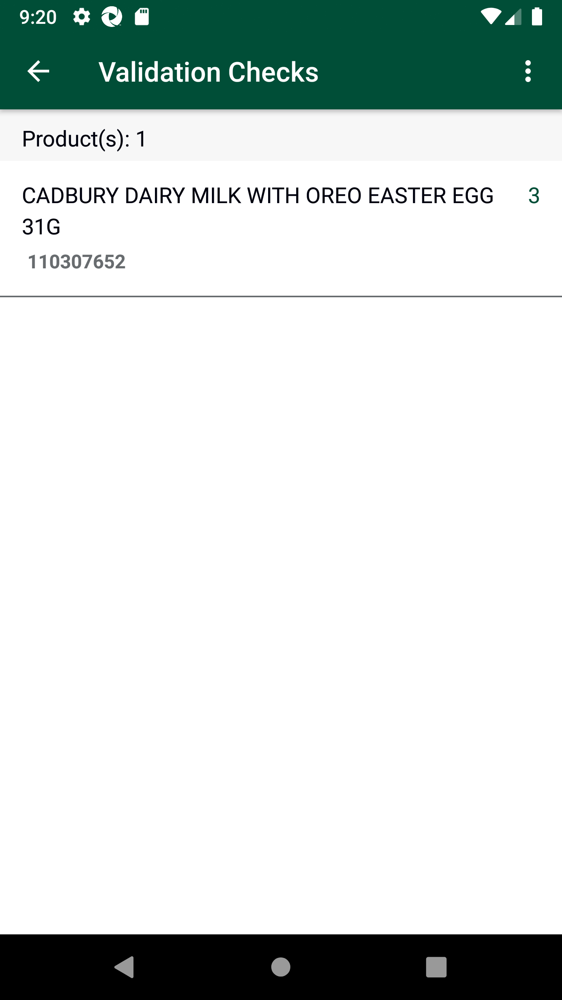
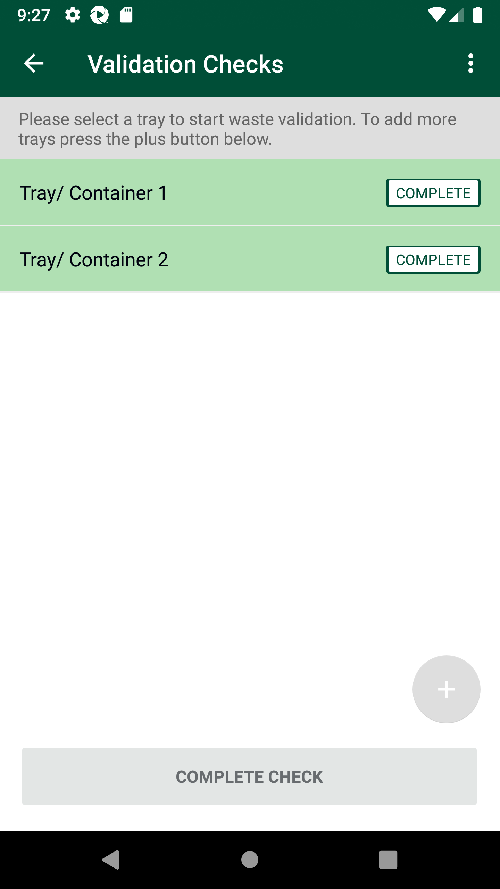
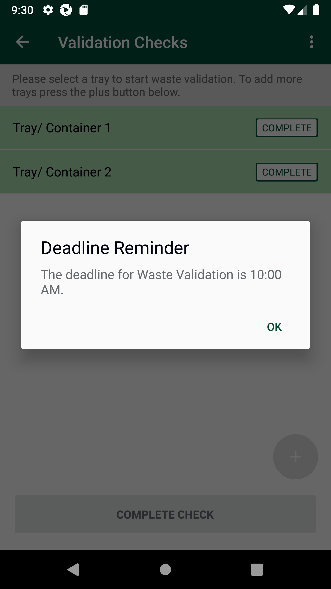
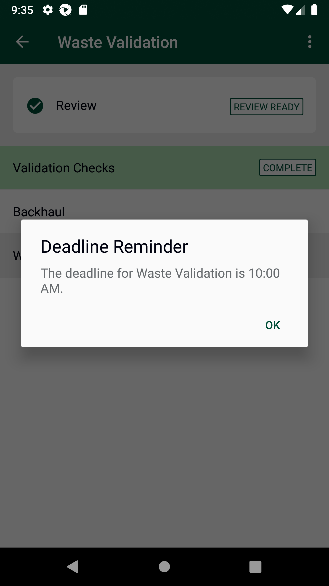

-
Verify Waste Validation - PEB Module
20:45:55 PM / 07:10:158 Fail
Verify Waste Validation - PEB Module
08.24.2023 20:45:55 08.24.2023 21:23:05 07:10:158 · #test-id=1@waste_validation_PEBPassTO CHANGE THE DEVICE TIMINGS AS REQUIREDPassTO CHANGE THE DEVICE TIMINGS AS REQUIREDGiven I send the time "9" and mins "02" and meridiem "am" and current date in listThen I Change timePassTO CHANGE THE DEVICE TIMINGS AS REQUIREDGiven I send the time "9" and mins "02" and meridiem "am" and current date in listThen I Change timeFailRecord Action Waste Before 11:30 AMFailRecord Action Waste Before 11:30 AMWhen I enter Username and Password for SMA Manager userAnd I click on login button for SMAAnd I click on "Stock Adjustments" on Home PageAnd I click on "Action Waste" on Stock Adjustment PageAnd I search for "108539622"Then I should get a pop up title saying "Weighted Product"Then I should get a Message saying "To accurately adjust this product, you should scan the price embedded barcode, would you like to continue?" and should be able to click the "Yes" ButtonAnd I click on "Waste - Damaged" on Action Waste PageAnd I enter the price "1.06" and I click on confirm buttonThen I should get a pop up title saying "Confirm Price"Then I should get a Message saying "Please confirm the price £1.06 you have entered is correct. Catch weight items can not be edited or removed once added." and should be able to click the "CONTINUE" Buttoncom.morrisons.common.action.Hook.afterScenario(io.cucumber.java.Scenario)
And I search for "0215730045070"Step skippedAnd I verify item selling price "45.07" is auto-populatedStep skippedAnd I verify the auto-populated item selling price is disabledStep skippedAnd I click on Confirm buttonStep skippedAnd I search for "0299000000000"Step skippedAnd I enter the desired quantity "3" and confirm the sameStep skippedAnd I search for "104935695"Step skippedThen I should get a pop up title saying "Weighted Product"Step skippedThen I should get a Message saying "To accurately adjust this product, you should scan the price embedded barcode, would you like to continue?" and should be able to click the "Yes" ButtonStep skippedAnd I verify item selling price "N/A" is auto-populatedStep skippedAnd I click on Confirm buttonStep skippedAnd I search for "0201940056000"Step skippedAnd I verify item selling price "N/A" is auto-populatedStep skippedAnd I click on Confirm buttonStep skippedAnd I search for "108684782"Step skippedAnd I enter the desired quantity "8" and confirm the sameStep skippedAnd I search for "105575628"Step skippedAnd I enter the desired quantity "3" and confirm the sameStep skippedAnd click on the List ViewStep skippedAnd I confirm the Submit ListStep skippedThen I should get a Message saying "Are you sure you want to submit the list?" and should be able to click the "SUBMIT" ButtonStep skippedThen I should get a Message saying "All items were submitted successfully. Tap on Done to leave." and should be able to click the "Done" ButtonStep skippedFailVerify PEB scenarios by creating the traysWhen I enter Username and Password for SMA Manager userAnd I click on login button for SMAAnd I click on "Stock Adjustments" on Home PageAnd I click on "Waste Validation" on Stock Adjustment PageAnd I click on "Validation Checks" on Waste Validation PageAnd I create "5" trayscom.morrisons.common.action.Hook.afterScenario(io.cucumber.java.Scenario)FailVerify PEB scenarios with Sellable KG MIN itemsFailVerify PEB scenarios with Sellable KG MIN itemsWhen I enter Username and Password for SMA Manager userAnd I click on login button for SMAAnd I click on "Stock Adjustments" on Home PageAnd I click on "Waste Validation" on Stock Adjustment PageAnd I click on "Validation Checks" on Waste Validation PageAnd I select tray "1"And I search for "102797305"com.morrisons.common.action.Hook.afterScenario(io.cucumber.java.Scenario)
Then I should get a pop up title saying "Weighted Product"Step skippedThen I should get a Message saying "To accurately adjust this product, you should scan the price embedded barcode, would you like to continue?" and should be able to click the "Yes" ButtonStep skippedAnd I verify fields displayed on screen for KG itemsStep skippedAnd verify screen message with title "Price Embedded Barcode" and message "You have scanned a product with price embedded barcode. Catch weight items should be validated individually. Please input the original Item selling price of the product."Step skippedAnd I enter the price "2.50" and I click on confirm buttonStep skippedThen I should get a pop up title saying "Confirm Price"Step skippedThen I should get a Message saying "Please confirm the price £2.50 you have entered is correct. Catch weight items can not be edited or removed once added." and should be able to click the "CONTINUE" ButtonStep skippedAnd click on the List ViewStep skippedThen I verify Product description, Product MINMORRISONS WELSH LAMB SHANK £2.50 1 102797305 Step skippedAnd I verify the item is disabledStep skippedFailVerify PEB scenarios with Sellable KG MIN itemsWhen I enter Username and Password for SMA Manager userAnd I click on login button for SMAAnd I click on "Stock Adjustments" on Home PageAnd I click on "Waste Validation" on Stock Adjustment PageAnd I click on "Validation Checks" on Waste Validation PageAnd I select tray "1"And I search for "108539622"com.morrisons.common.action.Hook.afterScenario(io.cucumber.java.Scenario)Then I should get a pop up title saying "Weighted Product"Step skippedThen I should get a Message saying "To accurately adjust this product, you should scan the price embedded barcode, would you like to continue?" and should be able to click the "Yes" ButtonStep skippedAnd I verify fields displayed on screen for KG itemsStep skippedAnd verify screen message with title "Price Embedded Barcode" and message "You have scanned a product with price embedded barcode. Catch weight items should be validated individually. Please input the original Item selling price of the product."Step skippedAnd I enter the price "1.06" and I click on confirm buttonStep skippedThen I should get a pop up title saying "Confirm Price"Step skippedThen I should get a Message saying "Please confirm the price £1.06 you have entered is correct. Catch weight items can not be edited or removed once added." and should be able to click the "CONTINUE" ButtonStep skippedAnd click on the List ViewStep skippedThen I verify Product description, Product MINMORRISONS LOOSE BRUSSELS SPROUTS £1.06 1 108539622 Step skippedAnd I verify the item is disabledStep skippedFailVerify PEB scenarios with Sellable KG EAN itemsFailVerify PEB scenarios with Sellable KG EAN itemsWhen I enter Username and Password for SMA Manager userAnd I click on login button for SMAAnd I click on "Stock Adjustments" on Home PageAnd I click on "Waste Validation" on Stock Adjustment PageAnd I click on "Validation Checks" on Waste Validation PageAnd I select tray "1"And I search for "0201090000000"com.morrisons.common.action.Hook.afterScenario(io.cucumber.java.Scenario)And I verify fields displayed on screen for KG itemsStep skippedAnd verify screen message with title "Price Embedded Barcode" and message "You have scanned a product with price embedded barcode. Catch weight items should be validated individually. Please press confirm to validate this product."Step skippedAnd I verify item selling price "0.00" is auto-populatedStep skippedAnd I verify the auto-populated item selling price is disabledStep skippedAnd I verify the "CONFIRM" button is "Disable"Step skippedFailVerify PEB scenarios with Sellable KG PEB itemsFailVerify PEB scenarios with Sellable KG PEB itemsWhen I enter Username and Password for SMA Manager userAnd I click on login button for SMAAnd I click on "Stock Adjustments" on Home PageAnd I click on "Waste Validation" on Stock Adjustment PageAnd I click on "Validation Checks" on Waste Validation PageAnd I select tray "1"And I search for "0215730045070"com.morrisons.common.action.Hook.afterScenario(io.cucumber.java.Scenario)And I verify fields displayed on screen for KG itemsStep skippedAnd verify screen message with title "Price Embedded Barcode" and message "You have scanned a product with price embedded barcode. Catch weight items should be validated individually. Please press confirm to validate this product."Step skippedAnd I verify item selling price "45.07" is auto-populatedStep skippedAnd I verify the auto-populated item selling price is disabledStep skippedAnd I click on Confirm buttonStep skippedAnd click on the List ViewStep skippedThen I verify Product description, Product MINWELSH RIB OF BEEF/B.LESS LS £45.07 1 102796353 Step skippedAnd I verify the item is disabledStep skippedFailVerify PEB scenarios with Sellable KG items when same items are scannedFailVerify PEB scenarios with Sellable KG items when same items are scannedWhen I enter Username and Password for SMA Manager userAnd I click on login button for SMAAnd I click on "Stock Adjustments" on Home PageAnd I click on "Waste Validation" on Stock Adjustment PageAnd I click on "Validation Checks" on Waste Validation PageAnd I select tray "1"And I search for "0291480002500"com.morrisons.common.action.Hook.afterScenario(io.cucumber.java.Scenario)
And I verify fields displayed on screen for KG itemsStep skippedAnd verify screen message with title "Price Embedded Barcode" and message "You have scanned a product with price embedded barcode. Catch weight items should be validated individually. Please press confirm to validate this product."Step skippedAnd I verify item selling price "2.50" is auto-populatedStep skippedAnd I verify the auto-populated item selling price is disabledStep skippedAnd I click on Confirm buttonStep skippedAnd click on the List ViewStep skippedThen I verify Product description, Product MINMORRISONS WELSH LAMB SHANK £2.50 2 102797305 Step skippedAnd I verify the item is disabledStep skippedFailVerify PEB scenarios with Sellable KG MIN items when same items are scanned with different pricesFailVerify PEB scenarios with Sellable KG MIN items when same items are scanned with different pricesWhen I enter Username and Password for SMA Manager userAnd I click on login button for SMAAnd I click on "Stock Adjustments" on Home PageAnd I click on "Waste Validation" on Stock Adjustment PageAnd I click on "Validation Checks" on Waste Validation PageAnd I select tray "1"And I search for "108539622"com.morrisons.common.action.Hook.afterScenario(io.cucumber.java.Scenario)Then I should get a pop up title saying "Weighted Product"Step skippedThen I should get a Message saying "To accurately adjust this product, you should scan the price embedded barcode, would you like to continue?" and should be able to click the "Yes" ButtonStep skippedAnd I verify fields displayed on screen for KG itemsStep skippedAnd verify screen message with title "Price Embedded Barcode" and message "You have scanned a product with price embedded barcode. Catch weight items should be validated individually. Please input the original Item selling price of the product."Step skippedAnd I enter the price "3.90" and I click on confirm buttonStep skippedThen I should get a pop up title saying "Confirm Price"Step skippedThen I should get a Message saying "Please confirm the price £3.90 you have entered is correct. Catch weight items can not be edited or removed once added." and should be able to click the "CONTINUE" ButtonStep skippedAnd click on the List ViewStep skippedThen I verify Product description, Product MINMORRISONS LOOSE BRUSSELS SPROUTS £3.90 1 108539622 Step skippedAnd I verify the item is disabledStep skippedFailVerify PEB scenarios with Sellable EA itemsFailVerify PEB scenarios with Sellable EA itemsWhen I enter Username and Password for SMA Manager userAnd I click on login button for SMAAnd I click on "Stock Adjustments" on Home PageAnd I click on "Waste Validation" on Stock Adjustment PageAnd I click on "Validation Checks" on Waste Validation PageAnd I select tray "2"And I search for "0299000000000"com.morrisons.common.action.Hook.afterScenario(io.cucumber.java.Scenario)And I verify fields displayed on screen for EA itemsStep skippedAnd I enter the desired quantity "2" and confirm the sameStep skippedFailVerify PEB scenarios with Sellable EA itemsWhen I enter Username and Password for SMA Manager userAnd I click on login button for SMAAnd I click on "Stock Adjustments" on Home PageAnd I click on "Waste Validation" on Stock Adjustment PageAnd I click on "Validation Checks" on Waste Validation PageAnd I select tray "2"And I search for "102800877"com.morrisons.common.action.Hook.afterScenario(io.cucumber.java.Scenario)And I verify fields displayed on screen for EA itemsStep skippedAnd I enter the desired quantity "3" and confirm the sameStep skippedFailVerify PEB scenarios with Sellable EA items when same items are scannedFailVerify PEB scenarios with Sellable EA items when same items are scannedWhen I enter Username and Password for SMA Manager userAnd I click on login button for SMAAnd I click on "Stock Adjustments" on Home PageAnd I click on "Waste Validation" on Stock Adjustment PageAnd I click on "Validation Checks" on Waste Validation PageAnd I select tray "2"And I search for "103043142"com.morrisons.common.action.Hook.afterScenario(io.cucumber.java.Scenario)And I verify "ADD TO COUNT" and "EDIT COUNT" buttons displayed on screenStep skippedAnd I click on Edit ButtonStep skippedAnd I enter the desired quantity "1" and confirm the sameStep skippedFailVerify PEB scenarios with Sellable EA items when same items are scannedWhen I enter Username and Password for SMA Manager userAnd I click on login button for SMAAnd I click on "Stock Adjustments" on Home PageAnd I click on "Waste Validation" on Stock Adjustment PageAnd I click on "Validation Checks" on Waste Validation PageAnd I select tray "2"And I search for "0208720000000"com.morrisons.common.action.Hook.afterScenario(io.cucumber.java.Scenario)And I verify "ADD TO COUNT" and "EDIT COUNT" buttons displayed on screenStep skippedAnd I click on Edit ButtonStep skippedAnd I enter the desired quantity "4" and confirm the sameStep skippedFailVerify PEB scenarios with Sellable EA items in View ListFailVerify PEB scenarios with Sellable EA items in View ListWhen I enter Username and Password for SMA Manager userAnd I click on login button for SMAAnd I click on "Stock Adjustments" on Home PageAnd I click on "Waste Validation" on Stock Adjustment PageAnd I click on "Validation Checks" on Waste Validation PageAnd I select tray "2"And click on the List Viewcom.morrisons.common.action.Hook.afterScenario(io.cucumber.java.Scenario)
Then I verify Product description, Product MINPIG HEART PREPACKED 4 102800877 Step skippedThen I verify Product description, Product MIN'M'FRESH YEAST 126G 1 103043142 Step skippedAnd I complete the trayStep skippedThen I should get a Message saying "The item threshold has not been met for this waste tray. If there are no more items left in the bag to validate you may continue. This action cannot be undone." and should be able to click the "Continue" ButtonStep skippedFailVerify PEB scenarios with Non-Sellable KG MIN itemsFailVerify PEB scenarios with Non-Sellable KG MIN itemsWhen I enter Username and Password for SMA Manager userAnd I click on login button for SMAAnd I click on "Stock Adjustments" on Home PageAnd I click on "Waste Validation" on Stock Adjustment PageAnd I click on "Validation Checks" on Waste Validation PageAnd I select tray "3"And I search for "104935695"com.morrisons.common.action.Hook.afterScenario(io.cucumber.java.Scenario)Then I should get a pop up title saying "Weighted Product"Step skippedThen I should get a Message saying "To accurately adjust this product, you should scan the price embedded barcode, would you like to continue?" and should be able to click the "Yes" ButtonStep skippedAnd I verify fields displayed on screen for KG itemsStep skippedAnd verify screen message with title "Non-sellable Product" and message "You have scanned a non-sellable product. You will not be able to enter a price as there is no item selling price associated with it. Please press confirm to validate this product."Step skippedAnd I verify item selling price "N/A" is auto-populatedStep skippedAnd I verify the auto-populated item selling price is disabledStep skippedAnd I click on Confirm buttonStep skippedAnd click on the List ViewStep skippedThen I verify Product description, Product MIN(B) HADDOCK LOIN 1 104935695 Step skippedAnd I verify the item is disabledStep skippedFailVerify PEB scenarios with Non-Sellable KG EAN/PEB itemsFailVerify PEB scenarios with Non-Sellable KG EAN/PEB itemsWhen I enter Username and Password for SMA Manager userAnd I click on login button for SMAAnd I click on "Stock Adjustments" on Home PageAnd I click on "Waste Validation" on Stock Adjustment PageAnd I click on "Validation Checks" on Waste Validation PageAnd I select tray "3"And I search for "0201940056000"com.morrisons.common.action.Hook.afterScenario(io.cucumber.java.Scenario)And I verify fields displayed on screen for KG itemsStep skippedAnd verify screen message with title "Non-sellable Product" and message "You have scanned a non-sellable product. You will not be able to enter a price as there is no item selling price associated with it. Please press confirm to validate this product."Step skippedAnd I verify item selling price "N/A" is auto-populatedStep skippedAnd I verify the auto-populated item selling price is disabledStep skippedAnd I click on Confirm buttonStep skippedAnd click on the List ViewStep skippedThen I verify Product description, Product MINMORRISONS SWEET & SMOKY HAM (COUNTER) 1 111189539 Step skippedAnd I verify the item is disabledStep skippedFailVerify PEB scenarios with Non-Sellable KG items when same items are scannedFailVerify PEB scenarios with Non-Sellable KG items when same items are scannedWhen I enter Username and Password for SMA Manager userAnd I click on login button for SMAAnd I click on "Stock Adjustments" on Home PageAnd I click on "Waste Validation" on Stock Adjustment PageAnd I click on "Validation Checks" on Waste Validation PageAnd I select tray "3"And I search for "111189539"com.morrisons.common.action.Hook.afterScenario(io.cucumber.java.Scenario)Then I should get a pop up title saying "Weighted Product"Step skippedThen I should get a Message saying "To accurately adjust this product, you should scan the price embedded barcode, would you like to continue?" and should be able to click the "Yes" ButtonStep skippedAnd I verify fields displayed on screen for KG itemsStep skippedAnd verify screen message with title "Non-sellable Product" and message "You have scanned a non-sellable product. You will not be able to enter a price as there is no item selling price associated with it. Please press confirm to validate this product."Step skippedAnd I verify item selling price "N/A" is auto-populatedStep skippedAnd I verify the auto-populated item selling price is disabledStep skippedAnd I click on Confirm buttonStep skippedAnd click on the List ViewStep skippedThen I verify Product description, Product MINMORRISONS SWEET & SMOKY HAM (COUNTER) 1 111189539 Step skippedAnd I verify the item is disabledStep skippedFailVerify PEB scenarios with Non-Sellable EA itemsFailVerify PEB scenarios with Non-Sellable EA itemsWhen I enter Username and Password for SMA Manager userAnd I click on login button for SMAAnd I click on "Stock Adjustments" on Home PageAnd I click on "Waste Validation" on Stock Adjustment PageAnd I click on "Validation Checks" on Waste Validation PageAnd I select tray "4"And I search for "108684782"com.morrisons.common.action.Hook.afterScenario(io.cucumber.java.Scenario)And I verify fields displayed on screen for EA itemsStep skippedAnd I enter the desired quantity "3" and confirm the sameStep skippedFailVerify PEB scenarios with Non-Sellable EA items when scanned same itemsFailVerify PEB scenarios with Non-Sellable EA items when scanned same itemsWhen I enter Username and Password for SMA Manager userAnd I click on login button for SMAAnd I click on "Stock Adjustments" on Home PageAnd I click on "Waste Validation" on Stock Adjustment PageAnd I click on "Validation Checks" on Waste Validation PageAnd I select tray "4"And I search for "108684782"com.morrisons.common.action.Hook.afterScenario(io.cucumber.java.Scenario)
And I verify "ADD TO COUNT" and "EDIT COUNT" buttons displayed on screenStep skippedAnd I click on Add to Count ButtonStep skippedAnd I enter the desired quantity "5" and confirm the sameStep skippedFailVerify PEB scenarios with Non-Sellable EA items in View ListFailVerify PEB scenarios with Non-Sellable EA items in View ListWhen I enter Username and Password for SMA Manager userAnd I click on login button for SMAAnd I click on "Stock Adjustments" on Home PageAnd I click on "Waste Validation" on Stock Adjustment PageAnd I click on "Validation Checks" on Waste Validation PageAnd I select tray "4"And click on the List Viewcom.morrisons.common.action.Hook.afterScenario(io.cucumber.java.Scenario)Then I verify Product description, Product MIN(B) MORRISONS VALENTINES DAY CUPCAKES 2PK 8 108684782 Step skippedAnd I complete the trayStep skippedThen I should get a Message saying "The item threshold has not been met for this waste tray. If there are no more items left in the bag to validate you may continue. This action cannot be undone." and should be able to click the "Continue" ButtonStep skippedFailVerify PEB scenarios with PIN itemsFailVerify PEB scenarios with PIN itemsWhen I enter Username and Password for SMA Manager userAnd I click on login button for SMAAnd I click on "Stock Adjustments" on Home PageAnd I click on "Waste Validation" on Stock Adjustment PageAnd I click on "Validation Checks" on Waste Validation PageAnd I select tray "5"And I search for "105575628"com.morrisons.common.action.Hook.afterScenario(io.cucumber.java.Scenario)
And I verify fields displayed on screen for EA itemsStep skippedAnd I enter the desired quantity "6" and confirm the sameStep skippedFailVerify PEB scenarios with same PIN itemsFailVerify PEB scenarios with same PIN itemsWhen I enter Username and Password for SMA Manager userAnd I click on login button for SMAAnd I click on "Stock Adjustments" on Home PageAnd I click on "Waste Validation" on Stock Adjustment PageAnd I click on "Validation Checks" on Waste Validation Pagecom.morrisons.common.action.Hook.afterScenario(io.cucumber.java.Scenario)And I select tray "5"Step skippedAnd I search for "05060133370413"Step skippedAnd I verify "ADD TO COUNT" and "EDIT COUNT" buttons displayed on screenStep skippedAnd I click on Edit ButtonStep skippedAnd I enter the desired quantity "3" and confirm the sameStep skippedFailVerify PEB scenarios with PIN items in View ListFailVerify PEB scenarios with PIN items in View ListWhen I enter Username and Password for SMA Manager userAnd I click on login button for SMAAnd I click on "Stock Adjustments" on Home PageAnd I click on "Waste Validation" on Stock Adjustment PageAnd I click on "Validation Checks" on Waste Validation Pagecom.morrisons.common.action.Hook.afterScenario(io.cucumber.java.Scenario)And I select tray "5"Step skippedAnd click on the List ViewStep skippedThen I verify PIN description, PIN MIN[3 x] AQUEOUS CREAM 500G 3 105575628 Step skippedAnd I complete the trayStep skippedThen I should get a Message saying "The item threshold has not been met for this waste tray. If there are no more items left in the bag to validate you may continue. This action cannot be undone." and should be able to click the "Continue" ButtonStep skippedFailVerify PEB scenarios on Review ScreenFailVerify PEB scenarios on Review ScreenWhen I enter Username and Password for SMA Manager userAnd I click on login button for SMAAnd I click on "Stock Adjustments" on Home PageAnd I click on "Waste Validation" on Stock Adjustment PageAnd I click on "Validation Checks" on Waste Validation Pagecom.morrisons.common.action.Hook.afterScenario(io.cucumber.java.Scenario)
And I select tray "1"Step skippedAnd click on the List ViewStep skippedAnd I complete the trayStep skippedThen I should get a Message saying "The item threshold has not been met for this waste tray. If there are no more items left in the bag to validate you may continue. This action cannot be undone." and should be able to click the "Continue" ButtonStep skippedAnd I select tray "3"Step skippedAnd click on the List ViewStep skippedAnd I complete the trayStep skippedThen I should get a Message saying "The item threshold has not been met for this waste tray. If there are no more items left in the bag to validate you may continue. This action cannot be undone." and should be able to click the "Continue" ButtonStep skippedAnd I click on Complete Check buttonStep skippedAnd I click on Complete & Review button on Complete Check screenStep skippedAnd I verify the date on Review pageStep skippedAnd I verify Review screen messageStep skippedAnd I verify the headers of review optionStep skippedAnd I click on "All" tab and verify the following detailsPIG HEART PREPACKED FAIL 102800877 0 4 4 Step skippedAnd I click on "All" tab and verify the following detailsMORRISONS WELSH LAMB SHANK £2.50 FAIL 102797305 0 2 2 Step skippedAnd I click on "All" tab and verify the following detailsMORRISONS LOOSE BRUSSELS SPROUTS £3.90 FAIL 108539622 0 1 1 Step skippedAnd I Scroll from 200 800 to 200 250Step skippedAnd I click on "All" tab and verify the following detailsMORRISONS SWEET & SMOKY HAM (COUNTER) FAIL 111189539 0 1 1 Step skippedAnd I Scroll from 200 800 to 200 250Step skippedAnd I click on "All" tab and verify the following details[3 x] AQUEOUS CREAM 500G PASS 105575628 3 3 0 Step skippedAnd I Scroll from 200 800 to 200 250Step skippedAnd I click on "All" tab and verify the following details(B) MORRISONS VALENTINES DAY CUPCAKES 2PK PASS 108684782 8 8 0 Step skippedAnd I Scroll from 200 800 to 200 250Step skippedAnd I click on "All" tab and verify the following detailsMORRISONS SWEET & SMOKY HAM (COUNTER) PASS 111189539 1 1 0 Step skippedAnd I Scroll from 200 800 to 200 250Step skippedAnd I click on "All" tab and verify the following details(B) HADDOCK LOIN PASS 104935695 1 1 0 Step skippedAnd I Scroll from 200 800 to 200 250Step skippedAnd I click on "All" tab and verify the following details'M'FRESH YEAST 126G PASS 103043142 3 1 -2 Step skippedAnd I Scroll from 200 800 to 200 250Step skippedAnd I click on "All" tab and verify the following detailsWELSH RIB OF BEEF/B.LESS LS £45.07 PASS 102796353 1 1 0 Step skippedAnd I Scroll from 200 800 to 200 250Step skippedAnd I click on "All" tab and verify the following detailsMORRISONS LOOSE BRUSSELS SPROUTS £1.06 PASS 108539622 1 1 0 Step skippedAnd I click on "Pass" tab and verify the following details[3 x] AQUEOUS CREAM 500G PASS 105575628 3 3 0 Step skippedAnd I click on "Pass" tab and verify the following details(B) MORRISONS VALENTINES DAY CUPCAKES 2PK PASS 108684782 8 8 0 Step skippedAnd I click on "Pass" tab and verify the following detailsMORRISONS SWEET & SMOKY HAM (COUNTER) PASS 111189539 1 1 0 Step skippedAnd I Scroll from 200 800 to 200 250Step skippedAnd I click on "Pass" tab and verify the following details(B) HADDOCK LOIN PASS 104935695 1 1 0 Step skippedAnd I Scroll from 200 800 to 200 250Step skippedAnd I click on "Pass" tab and verify the following details'M'FRESH YEAST 126G PASS 103043142 3 1 -2 Step skippedAnd I Scroll from 200 800 to 200 250Step skippedAnd I click on "Pass" tab and verify the following detailsWELSH RIB OF BEEF/B.LESS LS £45.07 PASS 102796353 1 1 0 Step skippedAnd I Scroll from 200 800 to 200 250Step skippedAnd I click on "Pass" tab and verify the following detailsMORRISONS LOOSE BRUSSELS SPROUTS £1.06 PASS 108539622 1 1 0 Step skippedAnd I click on "Fail" tab and verify the following detailsPIG HEART PREPACKED FAIL 102800877 0 4 4 Step skippedAnd I click on "Fail" tab and verify the following detailsMORRISONS WELSH LAMB SHANK £2.50 FAIL 102797305 0 2 2 Step skippedAnd I click on "Fail" tab and verify the following detailsMORRISONS LOOSE BRUSSELS SPROUTS £3.90 FAIL 108539622 0 1 1 Step skippedAnd I Scroll from 200 800 to 200 250Step skippedAnd I click on "Fail" tab and verify the following detailsMORRISONS SWEET & SMOKY HAM (COUNTER) FAIL 111189539 0 1 1 Step skipped
-
org.openqa.selenium.NoSuchElementException
1 tests
org.openqa.selenium.NoSuchElementException
1 failedStatus Timestamp TestName Fail 20:50:28 PM And I create "5" trays Verify Waste Validation - PEB Module.Verify PEB scenarios by creating the trays.And I create "5" traysFail 20:51:57 PM And I search for "102797305" Verify Waste Validation - PEB Module.Verify PEB scenarios with Sellable KG MIN items.And I search for "102797305"Fail 20:53:31 PM And I search for "108539622" Verify Waste Validation - PEB Module.Verify PEB scenarios with Sellable KG MIN items.And I search for "108539622"Fail 20:55:03 PM And I search for "0201090000000" Verify Waste Validation - PEB Module.Verify PEB scenarios with Sellable KG EAN items.And I search for "0201090000000"Fail 20:56:34 PM And I search for "0215730045070" Verify Waste Validation - PEB Module.Verify PEB scenarios with Sellable KG PEB items.And I search for "0215730045070"Fail 20:58:06 PM And I search for "0291480002500" Verify Waste Validation - PEB Module.Verify PEB scenarios with Sellable KG items when same items are scanned.And I search for "0291480002500"Fail 20:59:39 PM And I search for "108539622" Verify Waste Validation - PEB Module.Verify PEB scenarios with Sellable KG MIN items when same items are scanned with different prices.And I search for "108539622"Fail 21:01:12 PM And I search for "0299000000000" Verify Waste Validation - PEB Module.Verify PEB scenarios with Sellable EA items.And I search for "0299000000000"Fail 21:02:44 PM And I search for "102800877" Verify Waste Validation - PEB Module.Verify PEB scenarios with Sellable EA items.And I search for "102800877"Fail 21:04:16 PM And I search for "103043142" Verify Waste Validation - PEB Module.Verify PEB scenarios with Sellable EA items when same items are scanned.And I search for "103043142"Fail 21:05:49 PM And I search for "0208720000000" Verify Waste Validation - PEB Module.Verify PEB scenarios with Sellable EA items when same items are scanned.And I search for "0208720000000"Fail 21:07:20 PM And click on the List View Verify Waste Validation - PEB Module.Verify PEB scenarios with Sellable EA items in View List.And click on the List ViewFail 21:08:49 PM And I search for "104935695" Verify Waste Validation - PEB Module.Verify PEB scenarios with Non-Sellable KG MIN items.And I search for "104935695"Fail 21:10:20 PM And I search for "0201940056000" Verify Waste Validation - PEB Module.Verify PEB scenarios with Non-Sellable KG EAN/PEB items.And I search for "0201940056000"Fail 21:11:50 PM And I search for "111189539" Verify Waste Validation - PEB Module.Verify PEB scenarios with Non-Sellable KG items when same items are scanned.And I search for "111189539"Fail 21:13:22 PM And I search for "108684782" Verify Waste Validation - PEB Module.Verify PEB scenarios with Non-Sellable EA items.And I search for "108684782"Fail 21:14:53 PM And I search for "108684782" Verify Waste Validation - PEB Module.Verify PEB scenarios with Non-Sellable EA items when scanned same items.And I search for "108684782"Fail 21:16:26 PM And click on the List View Verify Waste Validation - PEB Module.Verify PEB scenarios with Non-Sellable EA items in View List.And click on the List ViewFail 21:17:55 PM And I search for "105575628" Verify Waste Validation - PEB Module.Verify PEB scenarios with PIN items.And I search for "105575628"Fail 21:19:20 PM And I click on "Validation Checks" on Waste Validation Page Verify Waste Validation - PEB Module.Verify PEB scenarios with same PIN items.And I click on "Validation Checks" on Waste Validation PageFail 21:20:42 PM And I click on "Validation Checks" on Waste Validation Page Verify Waste Validation - PEB Module.Verify PEB scenarios with PIN items in View List.And I click on "Validation Checks" on Waste Validation PageFail 21:22:04 PM And I click on "Validation Checks" on Waste Validation Page Verify Waste Validation - PEB Module.Verify PEB scenarios on Review Screen.And I click on "Validation Checks" on Waste Validation Page -
java.lang.AssertionError
1 tests
java.lang.AssertionError
1 failedStatus Timestamp TestName Fail 20:48:25 PM Then I should get a Message saying "Please confirm the price £1.06 you have entered is correct. Catch weight items can not be edited or removed once added." and should be able to click the "CONTINUE" Button Verify Waste Validation - PEB Module.Record Action Waste Before 11:30 AM.Then I should get a Message saying "Please confirm the price £1.06 you have entered is correct. Catch weight items can not be edited or removed once added." and should be able to click the "CONTINUE" Button
-
@WV_Before1130_Action_Waste_PEB
2 tests
@WV_Before1130_Action_Waste_PEB
2 failedStatus Timestamp TestName Fail 20:47:38 PM Record Action Waste Before 11:30 AM Verify Waste Validation - PEB Module.Record Action Waste Before 11:30 AMFail 20:47:38 PM Record Action Waste Before 11:30 AM Verify Waste Validation - PEB Module.Record Action Waste Before 11:30 AM -
@WV_After1130_PEBScenarios_CreateTrays
1 tests
@WV_After1130_PEBScenarios_CreateTrays
1 passedStatus Timestamp TestName Pass 20:48:27 PM TO CHANGE THE DEVICE TIMINGS AS REQUIRED Verify Waste Validation - PEB Module.TO CHANGE THE DEVICE TIMINGS AS REQUIRED -
@WV_After1130_PEBScenarios_ScanPIN
2 tests
@WV_After1130_PEBScenarios_ScanPIN
2 failedStatus Timestamp TestName Fail 21:17:29 PM Verify PEB scenarios with PIN items Verify Waste Validation - PEB Module.Verify PEB scenarios with PIN itemsFail 21:17:29 PM Verify PEB scenarios with PIN items Verify Waste Validation - PEB Module.Verify PEB scenarios with PIN items -
@WV5_After1130_PEBScenarios_CreateTrays
1 tests
@WV5_After1130_PEBScenarios_CreateTrays
1 failedStatus Timestamp TestName Fail 20:50:05 PM Verify PEB scenarios by creating the trays Verify Waste Validation - PEB Module.Verify PEB scenarios by creating the trays -
@WV_After1130_PEBScenarios_ScanSellableEA
3 tests
@WV_After1130_PEBScenarios_ScanSellableEA
3 failedStatus Timestamp TestName Fail 21:00:45 PM Verify PEB scenarios with Sellable EA items Verify Waste Validation - PEB Module.Verify PEB scenarios with Sellable EA itemsFail 21:00:45 PM Verify PEB scenarios with Sellable EA items Verify Waste Validation - PEB Module.Verify PEB scenarios with Sellable EA itemsFail 21:02:17 PM Verify PEB scenarios with Sellable EA items Verify Waste Validation - PEB Module.Verify PEB scenarios with Sellable EA items -
@WV_Before1130_1030
2 tests
@WV_Before1130_1030
2 passedStatus Timestamp TestName Pass 20:45:55 PM TO CHANGE THE DEVICE TIMINGS AS REQUIRED Verify Waste Validation - PEB Module.TO CHANGE THE DEVICE TIMINGS AS REQUIREDPass 20:45:55 PM TO CHANGE THE DEVICE TIMINGS AS REQUIRED Verify Waste Validation - PEB Module.TO CHANGE THE DEVICE TIMINGS AS REQUIRED -
@WV_After1130_PEBScenarios_NonSellableEAViewList
2 tests
@WV_After1130_PEBScenarios_NonSellableEAViewList
2 failedStatus Timestamp TestName Fail 21:15:58 PM Verify PEB scenarios with Non-Sellable EA items in View List Verify Waste Validation - PEB Module.Verify PEB scenarios with Non-Sellable EA items in View ListFail 21:15:58 PM Verify PEB scenarios with Non-Sellable EA items in View List Verify Waste Validation - PEB Module.Verify PEB scenarios with Non-Sellable EA items in View List -
@WV_After1130_PEBScenarios_ScanSameNonSellableEA
2 tests
@WV_After1130_PEBScenarios_ScanSameNonSellableEA
2 failedStatus Timestamp TestName Fail 21:14:27 PM Verify PEB scenarios with Non-Sellable EA items when scanned same items Verify Waste Validation - PEB Module.Verify PEB scenarios with Non-Sellable EA items when scanned same itemsFail 21:14:27 PM Verify PEB scenarios with Non-Sellable EA items when scanned same items Verify Waste Validation - PEB Module.Verify PEB scenarios with Non-Sellable EA items when scanned same items -
@WV_After1130
1 tests
@WV_After1130
1 passedStatus Timestamp TestName Pass 20:48:27 PM TO CHANGE THE DEVICE TIMINGS AS REQUIRED Verify Waste Validation - PEB Module.TO CHANGE THE DEVICE TIMINGS AS REQUIRED -
@waste_validation_PEB
26 tests
@waste_validation_PEB
2 passed 24 failedStatus Timestamp TestName Fail 20:45:55 PM Verify Waste Validation - PEB Module Pass 20:45:55 PM TO CHANGE THE DEVICE TIMINGS AS REQUIRED Verify Waste Validation - PEB Module.TO CHANGE THE DEVICE TIMINGS AS REQUIREDFail 20:47:38 PM Record Action Waste Before 11:30 AM Verify Waste Validation - PEB Module.Record Action Waste Before 11:30 AMPass 20:48:27 PM TO CHANGE THE DEVICE TIMINGS AS REQUIRED Verify Waste Validation - PEB Module.TO CHANGE THE DEVICE TIMINGS AS REQUIREDFail 20:50:05 PM Verify PEB scenarios by creating the trays Verify Waste Validation - PEB Module.Verify PEB scenarios by creating the traysFail 20:51:30 PM Verify PEB scenarios with Sellable KG MIN items Verify Waste Validation - PEB Module.Verify PEB scenarios with Sellable KG MIN itemsFail 20:53:02 PM Verify PEB scenarios with Sellable KG MIN items Verify Waste Validation - PEB Module.Verify PEB scenarios with Sellable KG MIN itemsFail 20:54:36 PM Verify PEB scenarios with Sellable KG EAN items Verify Waste Validation - PEB Module.Verify PEB scenarios with Sellable KG EAN itemsFail 20:56:08 PM Verify PEB scenarios with Sellable KG PEB items Verify Waste Validation - PEB Module.Verify PEB scenarios with Sellable KG PEB itemsFail 20:57:39 PM Verify PEB scenarios with Sellable KG items when same items are scanned Verify Waste Validation - PEB Module.Verify PEB scenarios with Sellable KG items when same items are scannedFail 20:59:11 PM Verify PEB scenarios with Sellable KG MIN items when same items are scanned with different prices Verify Waste Validation - PEB Module.Verify PEB scenarios with Sellable KG MIN items when same items are scanned with different pricesFail 21:00:45 PM Verify PEB scenarios with Sellable EA items Verify Waste Validation - PEB Module.Verify PEB scenarios with Sellable EA itemsFail 21:02:17 PM Verify PEB scenarios with Sellable EA items Verify Waste Validation - PEB Module.Verify PEB scenarios with Sellable EA itemsFail 21:03:48 PM Verify PEB scenarios with Sellable EA items when same items are scanned Verify Waste Validation - PEB Module.Verify PEB scenarios with Sellable EA items when same items are scannedFail 21:05:20 PM Verify PEB scenarios with Sellable EA items when same items are scanned Verify Waste Validation - PEB Module.Verify PEB scenarios with Sellable EA items when same items are scannedFail 21:06:53 PM Verify PEB scenarios with Sellable EA items in View List Verify Waste Validation - PEB Module.Verify PEB scenarios with Sellable EA items in View ListFail 21:08:22 PM Verify PEB scenarios with Non-Sellable KG MIN items Verify Waste Validation - PEB Module.Verify PEB scenarios with Non-Sellable KG MIN itemsFail 21:09:54 PM Verify PEB scenarios with Non-Sellable KG EAN/PEB items Verify Waste Validation - PEB Module.Verify PEB scenarios with Non-Sellable KG EAN/PEB itemsFail 21:11:25 PM Verify PEB scenarios with Non-Sellable KG items when same items are scanned Verify Waste Validation - PEB Module.Verify PEB scenarios with Non-Sellable KG items when same items are scannedFail 21:12:56 PM Verify PEB scenarios with Non-Sellable EA items Verify Waste Validation - PEB Module.Verify PEB scenarios with Non-Sellable EA itemsFail 21:14:27 PM Verify PEB scenarios with Non-Sellable EA items when scanned same items Verify Waste Validation - PEB Module.Verify PEB scenarios with Non-Sellable EA items when scanned same itemsFail 21:15:58 PM Verify PEB scenarios with Non-Sellable EA items in View List Verify Waste Validation - PEB Module.Verify PEB scenarios with Non-Sellable EA items in View ListFail 21:17:29 PM Verify PEB scenarios with PIN items Verify Waste Validation - PEB Module.Verify PEB scenarios with PIN itemsFail 21:19:00 PM Verify PEB scenarios with same PIN items Verify Waste Validation - PEB Module.Verify PEB scenarios with same PIN itemsFail 21:20:23 PM Verify PEB scenarios with PIN items in View List Verify Waste Validation - PEB Module.Verify PEB scenarios with PIN items in View ListFail 21:21:45 PM Verify PEB scenarios on Review Screen Verify Waste Validation - PEB Module.Verify PEB scenarios on Review Screen -
@sma
42 tests
@sma
42 failedStatus Timestamp TestName Fail 20:47:38 PM Record Action Waste Before 11:30 AM Verify Waste Validation - PEB Module.Record Action Waste Before 11:30 AMFail 20:47:38 PM Record Action Waste Before 11:30 AM Verify Waste Validation - PEB Module.Record Action Waste Before 11:30 AMFail 20:50:05 PM Verify PEB scenarios by creating the trays Verify Waste Validation - PEB Module.Verify PEB scenarios by creating the traysFail 20:51:30 PM Verify PEB scenarios with Sellable KG MIN items Verify Waste Validation - PEB Module.Verify PEB scenarios with Sellable KG MIN itemsFail 20:51:30 PM Verify PEB scenarios with Sellable KG MIN items Verify Waste Validation - PEB Module.Verify PEB scenarios with Sellable KG MIN itemsFail 20:53:02 PM Verify PEB scenarios with Sellable KG MIN items Verify Waste Validation - PEB Module.Verify PEB scenarios with Sellable KG MIN itemsFail 20:54:36 PM Verify PEB scenarios with Sellable KG EAN items Verify Waste Validation - PEB Module.Verify PEB scenarios with Sellable KG EAN itemsFail 20:54:36 PM Verify PEB scenarios with Sellable KG EAN items Verify Waste Validation - PEB Module.Verify PEB scenarios with Sellable KG EAN itemsFail 20:56:08 PM Verify PEB scenarios with Sellable KG PEB items Verify Waste Validation - PEB Module.Verify PEB scenarios with Sellable KG PEB itemsFail 20:56:08 PM Verify PEB scenarios with Sellable KG PEB items Verify Waste Validation - PEB Module.Verify PEB scenarios with Sellable KG PEB itemsFail 20:57:39 PM Verify PEB scenarios with Sellable KG items when same items are scanned Verify Waste Validation - PEB Module.Verify PEB scenarios with Sellable KG items when same items are scannedFail 20:57:39 PM Verify PEB scenarios with Sellable KG items when same items are scanned Verify Waste Validation - PEB Module.Verify PEB scenarios with Sellable KG items when same items are scannedFail 20:59:11 PM Verify PEB scenarios with Sellable KG MIN items when same items are scanned with different prices Verify Waste Validation - PEB Module.Verify PEB scenarios with Sellable KG MIN items when same items are scanned with different pricesFail 20:59:11 PM Verify PEB scenarios with Sellable KG MIN items when same items are scanned with different prices Verify Waste Validation - PEB Module.Verify PEB scenarios with Sellable KG MIN items when same items are scanned with different pricesFail 21:00:45 PM Verify PEB scenarios with Sellable EA items Verify Waste Validation - PEB Module.Verify PEB scenarios with Sellable EA itemsFail 21:00:45 PM Verify PEB scenarios with Sellable EA items Verify Waste Validation - PEB Module.Verify PEB scenarios with Sellable EA itemsFail 21:02:17 PM Verify PEB scenarios with Sellable EA items Verify Waste Validation - PEB Module.Verify PEB scenarios with Sellable EA itemsFail 21:03:48 PM Verify PEB scenarios with Sellable EA items when same items are scanned Verify Waste Validation - PEB Module.Verify PEB scenarios with Sellable EA items when same items are scannedFail 21:03:48 PM Verify PEB scenarios with Sellable EA items when same items are scanned Verify Waste Validation - PEB Module.Verify PEB scenarios with Sellable EA items when same items are scannedFail 21:05:20 PM Verify PEB scenarios with Sellable EA items when same items are scanned Verify Waste Validation - PEB Module.Verify PEB scenarios with Sellable EA items when same items are scannedFail 21:06:53 PM Verify PEB scenarios with Sellable EA items in View List Verify Waste Validation - PEB Module.Verify PEB scenarios with Sellable EA items in View ListFail 21:06:53 PM Verify PEB scenarios with Sellable EA items in View List Verify Waste Validation - PEB Module.Verify PEB scenarios with Sellable EA items in View ListFail 21:08:22 PM Verify PEB scenarios with Non-Sellable KG MIN items Verify Waste Validation - PEB Module.Verify PEB scenarios with Non-Sellable KG MIN itemsFail 21:08:22 PM Verify PEB scenarios with Non-Sellable KG MIN items Verify Waste Validation - PEB Module.Verify PEB scenarios with Non-Sellable KG MIN itemsFail 21:09:54 PM Verify PEB scenarios with Non-Sellable KG EAN/PEB items Verify Waste Validation - PEB Module.Verify PEB scenarios with Non-Sellable KG EAN/PEB itemsFail 21:09:54 PM Verify PEB scenarios with Non-Sellable KG EAN/PEB items Verify Waste Validation - PEB Module.Verify PEB scenarios with Non-Sellable KG EAN/PEB itemsFail 21:11:25 PM Verify PEB scenarios with Non-Sellable KG items when same items are scanned Verify Waste Validation - PEB Module.Verify PEB scenarios with Non-Sellable KG items when same items are scannedFail 21:11:25 PM Verify PEB scenarios with Non-Sellable KG items when same items are scanned Verify Waste Validation - PEB Module.Verify PEB scenarios with Non-Sellable KG items when same items are scannedFail 21:12:56 PM Verify PEB scenarios with Non-Sellable EA items Verify Waste Validation - PEB Module.Verify PEB scenarios with Non-Sellable EA itemsFail 21:12:56 PM Verify PEB scenarios with Non-Sellable EA items Verify Waste Validation - PEB Module.Verify PEB scenarios with Non-Sellable EA itemsFail 21:14:27 PM Verify PEB scenarios with Non-Sellable EA items when scanned same items Verify Waste Validation - PEB Module.Verify PEB scenarios with Non-Sellable EA items when scanned same itemsFail 21:14:27 PM Verify PEB scenarios with Non-Sellable EA items when scanned same items Verify Waste Validation - PEB Module.Verify PEB scenarios with Non-Sellable EA items when scanned same itemsFail 21:15:58 PM Verify PEB scenarios with Non-Sellable EA items in View List Verify Waste Validation - PEB Module.Verify PEB scenarios with Non-Sellable EA items in View ListFail 21:15:58 PM Verify PEB scenarios with Non-Sellable EA items in View List Verify Waste Validation - PEB Module.Verify PEB scenarios with Non-Sellable EA items in View ListFail 21:17:29 PM Verify PEB scenarios with PIN items Verify Waste Validation - PEB Module.Verify PEB scenarios with PIN itemsFail 21:17:29 PM Verify PEB scenarios with PIN items Verify Waste Validation - PEB Module.Verify PEB scenarios with PIN itemsFail 21:19:00 PM Verify PEB scenarios with same PIN items Verify Waste Validation - PEB Module.Verify PEB scenarios with same PIN itemsFail 21:19:00 PM Verify PEB scenarios with same PIN items Verify Waste Validation - PEB Module.Verify PEB scenarios with same PIN itemsFail 21:20:23 PM Verify PEB scenarios with PIN items in View List Verify Waste Validation - PEB Module.Verify PEB scenarios with PIN items in View ListFail 21:20:23 PM Verify PEB scenarios with PIN items in View List Verify Waste Validation - PEB Module.Verify PEB scenarios with PIN items in View ListFail 21:21:45 PM Verify PEB scenarios on Review Screen Verify Waste Validation - PEB Module.Verify PEB scenarios on Review ScreenFail 21:21:45 PM Verify PEB scenarios on Review Screen Verify Waste Validation - PEB Module.Verify PEB scenarios on Review Screen -
@WV_After1130_PEBScenarios_PINViewList
2 tests
@WV_After1130_PEBScenarios_PINViewList
2 failedStatus Timestamp TestName Fail 21:20:23 PM Verify PEB scenarios with PIN items in View List Verify Waste Validation - PEB Module.Verify PEB scenarios with PIN items in View ListFail 21:20:23 PM Verify PEB scenarios with PIN items in View List Verify Waste Validation - PEB Module.Verify PEB scenarios with PIN items in View List -
@WV_After1130_PEBScenarios_ScanSellableKG
7 tests
@WV_After1130_PEBScenarios_ScanSellableKG
7 failedStatus Timestamp TestName Fail 20:51:30 PM Verify PEB scenarios with Sellable KG MIN items Verify Waste Validation - PEB Module.Verify PEB scenarios with Sellable KG MIN itemsFail 20:51:30 PM Verify PEB scenarios with Sellable KG MIN items Verify Waste Validation - PEB Module.Verify PEB scenarios with Sellable KG MIN itemsFail 20:53:02 PM Verify PEB scenarios with Sellable KG MIN items Verify Waste Validation - PEB Module.Verify PEB scenarios with Sellable KG MIN itemsFail 20:54:36 PM Verify PEB scenarios with Sellable KG EAN items Verify Waste Validation - PEB Module.Verify PEB scenarios with Sellable KG EAN itemsFail 20:54:36 PM Verify PEB scenarios with Sellable KG EAN items Verify Waste Validation - PEB Module.Verify PEB scenarios with Sellable KG EAN itemsFail 20:56:08 PM Verify PEB scenarios with Sellable KG PEB items Verify Waste Validation - PEB Module.Verify PEB scenarios with Sellable KG PEB itemsFail 20:56:08 PM Verify PEB scenarios with Sellable KG PEB items Verify Waste Validation - PEB Module.Verify PEB scenarios with Sellable KG PEB items -
@WV_After1130_PEBScenarios_ScanSameNonSellableKG
2 tests
@WV_After1130_PEBScenarios_ScanSameNonSellableKG
2 failedStatus Timestamp TestName Fail 21:11:25 PM Verify PEB scenarios with Non-Sellable KG items when same items are scanned Verify Waste Validation - PEB Module.Verify PEB scenarios with Non-Sellable KG items when same items are scannedFail 21:11:25 PM Verify PEB scenarios with Non-Sellable KG items when same items are scanned Verify Waste Validation - PEB Module.Verify PEB scenarios with Non-Sellable KG items when same items are scanned -
@timeChange
3 tests
@timeChange
3 passedStatus Timestamp TestName Pass 20:45:55 PM TO CHANGE THE DEVICE TIMINGS AS REQUIRED Verify Waste Validation - PEB Module.TO CHANGE THE DEVICE TIMINGS AS REQUIREDPass 20:45:55 PM TO CHANGE THE DEVICE TIMINGS AS REQUIRED Verify Waste Validation - PEB Module.TO CHANGE THE DEVICE TIMINGS AS REQUIREDPass 20:48:27 PM TO CHANGE THE DEVICE TIMINGS AS REQUIRED Verify Waste Validation - PEB Module.TO CHANGE THE DEVICE TIMINGS AS REQUIRED -
@WV_After1130_PEBScenarios_ScanSamePIN
2 tests
@WV_After1130_PEBScenarios_ScanSamePIN
2 failedStatus Timestamp TestName Fail 21:19:00 PM Verify PEB scenarios with same PIN items Verify Waste Validation - PEB Module.Verify PEB scenarios with same PIN itemsFail 21:19:00 PM Verify PEB scenarios with same PIN items Verify Waste Validation - PEB Module.Verify PEB scenarios with same PIN items -
@WV_After1130_PEBScenarios_ScanNonSellableEA
2 tests
@WV_After1130_PEBScenarios_ScanNonSellableEA
2 failedStatus Timestamp TestName Fail 21:12:56 PM Verify PEB scenarios with Non-Sellable EA items Verify Waste Validation - PEB Module.Verify PEB scenarios with Non-Sellable EA itemsFail 21:12:56 PM Verify PEB scenarios with Non-Sellable EA items Verify Waste Validation - PEB Module.Verify PEB scenarios with Non-Sellable EA items -
@WV_After1130_PEBScenarios_Review
2 tests
@WV_After1130_PEBScenarios_Review
2 failedStatus Timestamp TestName Fail 21:21:45 PM Verify PEB scenarios on Review Screen Verify Waste Validation - PEB Module.Verify PEB scenarios on Review ScreenFail 21:21:45 PM Verify PEB scenarios on Review Screen Verify Waste Validation - PEB Module.Verify PEB scenarios on Review Screen -
@WV_After1130_PEBScenarios_ScanNonSellableKG
4 tests
@WV_After1130_PEBScenarios_ScanNonSellableKG
4 failedStatus Timestamp TestName Fail 21:08:22 PM Verify PEB scenarios with Non-Sellable KG MIN items Verify Waste Validation - PEB Module.Verify PEB scenarios with Non-Sellable KG MIN itemsFail 21:08:22 PM Verify PEB scenarios with Non-Sellable KG MIN items Verify Waste Validation - PEB Module.Verify PEB scenarios with Non-Sellable KG MIN itemsFail 21:09:54 PM Verify PEB scenarios with Non-Sellable KG EAN/PEB items Verify Waste Validation - PEB Module.Verify PEB scenarios with Non-Sellable KG EAN/PEB itemsFail 21:09:54 PM Verify PEB scenarios with Non-Sellable KG EAN/PEB items Verify Waste Validation - PEB Module.Verify PEB scenarios with Non-Sellable KG EAN/PEB items -
@WV_After1130_PEBScenarios_ScanSameSellableEA
3 tests
@WV_After1130_PEBScenarios_ScanSameSellableEA
3 failedStatus Timestamp TestName Fail 21:03:48 PM Verify PEB scenarios with Sellable EA items when same items are scanned Verify Waste Validation - PEB Module.Verify PEB scenarios with Sellable EA items when same items are scannedFail 21:03:48 PM Verify PEB scenarios with Sellable EA items when same items are scanned Verify Waste Validation - PEB Module.Verify PEB scenarios with Sellable EA items when same items are scannedFail 21:05:20 PM Verify PEB scenarios with Sellable EA items when same items are scanned Verify Waste Validation - PEB Module.Verify PEB scenarios with Sellable EA items when same items are scanned -
@WV_After1130_PEBScenarios_SellableEAViewList
2 tests
@WV_After1130_PEBScenarios_SellableEAViewList
2 failedStatus Timestamp TestName Fail 21:06:53 PM Verify PEB scenarios with Sellable EA items in View List Verify Waste Validation - PEB Module.Verify PEB scenarios with Sellable EA items in View ListFail 21:06:53 PM Verify PEB scenarios with Sellable EA items in View List Verify Waste Validation - PEB Module.Verify PEB scenarios with Sellable EA items in View List -
@WV_After1130_PEBScenarios_ScanSameSellableKG
4 tests
@WV_After1130_PEBScenarios_ScanSameSellableKG
4 failedStatus Timestamp TestName Fail 20:57:39 PM Verify PEB scenarios with Sellable KG items when same items are scanned Verify Waste Validation - PEB Module.Verify PEB scenarios with Sellable KG items when same items are scannedFail 20:57:39 PM Verify PEB scenarios with Sellable KG items when same items are scanned Verify Waste Validation - PEB Module.Verify PEB scenarios with Sellable KG items when same items are scannedFail 20:59:11 PM Verify PEB scenarios with Sellable KG MIN items when same items are scanned with different prices Verify Waste Validation - PEB Module.Verify PEB scenarios with Sellable KG MIN items when same items are scanned with different pricesFail 20:59:11 PM Verify PEB scenarios with Sellable KG MIN items when same items are scanned with different prices Verify Waste Validation - PEB Module.Verify PEB scenarios with Sellable KG MIN items when same items are scanned with different prices
Started
Aug 24, 2023 08:45:51 PM
Ended
Aug 24, 2023 09:23:06 PM
Features Passed
0
Features Failed
1
Features
Scenarios
Steps
Timeline
Tags
| Name | Passed | Failed | Skipped | Others | Passed % |
|---|---|---|---|---|---|
| @WV_Before1130_Action_Waste_PEB | 0 | 2 | 0 | 0 | 0% |
| @WV_After1130_PEBScenarios_CreateTrays | 1 | 0 | 0 | 0 | 100% |
| @WV_After1130_PEBScenarios_ScanPIN | 0 | 2 | 0 | 0 | 0% |
| @WV5_After1130_PEBScenarios_CreateTrays | 0 | 1 | 0 | 0 | 0% |
| @WV_After1130_PEBScenarios_ScanSellableEA | 0 | 3 | 0 | 0 | 0% |
| @WV_Before1130_1030 | 2 | 0 | 0 | 0 | 100% |
| @WV_After1130_PEBScenarios_NonSellableEAViewList | 0 | 2 | 0 | 0 | 0% |
| @WV_After1130_PEBScenarios_ScanSameNonSellableEA | 0 | 2 | 0 | 0 | 0% |
| @WV_After1130 | 1 | 0 | 0 | 0 | 100% |
| @waste_validation_PEB | 2 | 24 | 0 | 0 | 7.692% |
| @sma | 0 | 42 | 0 | 0 | 0% |
| @WV_After1130_PEBScenarios_PINViewList | 0 | 2 | 0 | 0 | 0% |
| @WV_After1130_PEBScenarios_ScanSellableKG | 0 | 7 | 0 | 0 | 0% |
| @WV_After1130_PEBScenarios_ScanSameNonSellableKG | 0 | 2 | 0 | 0 | 0% |
| @timeChange | 3 | 0 | 0 | 0 | 100% |
| @WV_After1130_PEBScenarios_ScanSamePIN | 0 | 2 | 0 | 0 | 0% |
| @WV_After1130_PEBScenarios_ScanNonSellableEA | 0 | 2 | 0 | 0 | 0% |
| @WV_After1130_PEBScenarios_Review | 0 | 2 | 0 | 0 | 0% |
| @WV_After1130_PEBScenarios_ScanNonSellableKG | 0 | 4 | 0 | 0 | 0% |
| @WV_After1130_PEBScenarios_ScanSameSellableEA | 0 | 3 | 0 | 0 | 0% |
| @WV_After1130_PEBScenarios_SellableEAViewList | 0 | 2 | 0 | 0 | 0% |
| @WV_After1130_PEBScenarios_ScanSameSellableKG | 0 | 4 | 0 | 0 | 0% |